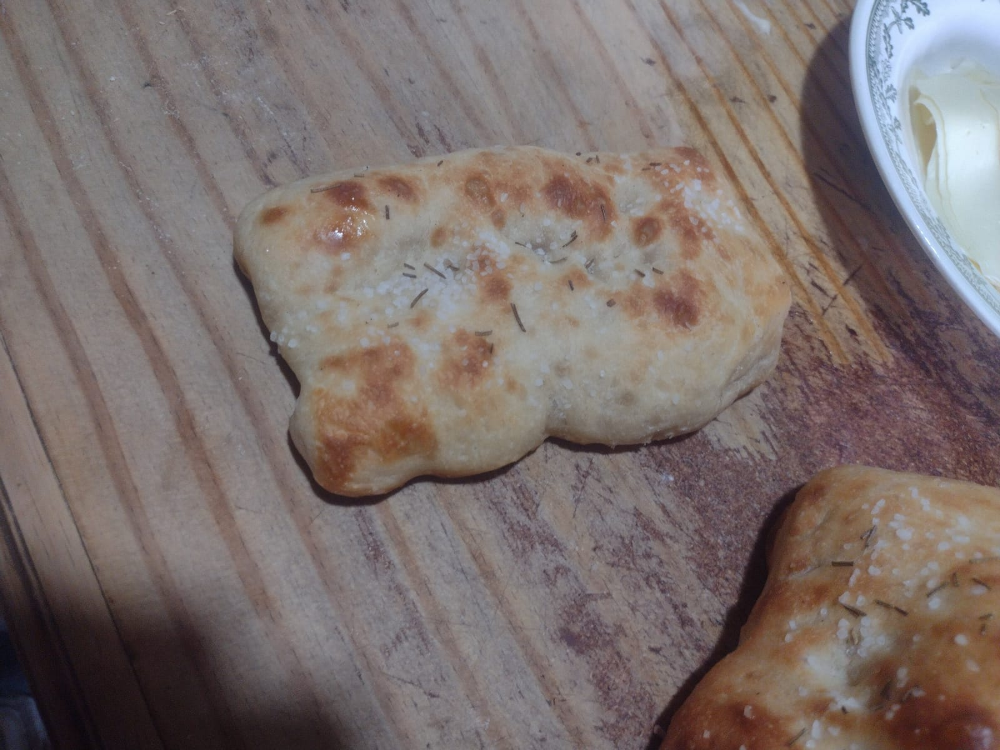
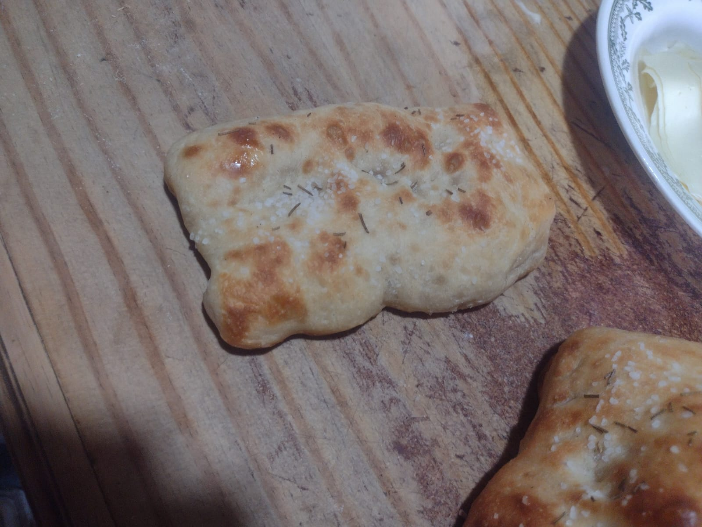

La definición de mamá es la mujer que ha tenido hijos o que ejerce el papel de madre, pero para mí es más que eso. La madre es la que enseña y da de comer:
 

La que te enseña a aprender de manera correcta:

La que da el ejemplo de lo que es una familia:


La que te cuida, te ama y te enseña a amar:


Madre no es solo la que te cuida y alimenta, madre es la que a pesar de estar lejos te seguirá amando, tratando de ayudarte, enseñarte y cuidarte.
Las madres son un rompecabezas, y al tener un hijo les dan sus piezas que son los valores, las enseñanzas, la manera de enseñar, la manera de amar, para que todas esas piezas no formen una persona igual a ellas, formen a una persona mejor que ellas.
Por estas y más razones es que: